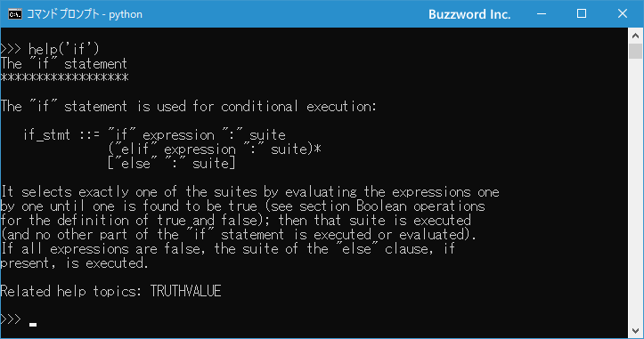

Pythonを対話モードで利用する
Python では入力したコードをすぐに実行することができる対話モードで利用する機能が用意されています。ここでは Python を対話モードで起動し利用する方法について解説します。
Pythonを対話モードで起動する
Windows 環境で Python を対話モード(インタラクティブモードともいいます)で起動するには、コマンドプロンプトを起動したあとで python と実行してください。
python
次のような画面が表示され入力待ちとなります。
最初に簡単な四則演算を行ってみます。次のように入力して[Enter]キーを押して下さい。
10*5-3
演算した結果である 47 が画面に表示され、また入力待ちとなりました。
次に簡単な変数を使った処理を行ったみます。次のように順番に入力して[Enter]キーを押してください。
num = 8
price = 500
num * price
変数 num に 8 を格納し、変数 price に 500 を格納したあと、 それぞれの変数に格納されている値を乗算した num * price を計算し、その結果である 4000 を画面に出力しています。
このように単なる計算といったものだけでなく変数や条件分岐、繰り返し処理などを使ったものまでスクリプトをファイルなどに記述することなく実行し結果を得ることができます。
対話モードを終了する
対話モードを終了するには、 Windows 環境の場合は Ctrl + z キーを押してください。画面に次のように表示されます。
Enter キーを押してください。対話モードが終了します。
対話モードでヘルプを参照する
Python を対話モードで利用している時に Python に関するヘルプを参照することができます。例えば if 文についてのヘルプを参照するには次のように入力して実行してください。
help('if')

if 文に関するヘルプを参照することができました。
Pythonの対話モードで画面をクリアする
Python の対話モードでは画面をクリアするためのコマンドは用意されてません。その為、いったん対話モードを抜けてからコンソール画面の機能で画面をクリアして再び対話モードを使用するか、対話モードで次のようにコマンドを実行してください。
Windows環境の場合：
import os
ret = os.system('cls')
Mac や Linux環境の場合：
import os
ret = os.system('clear')
実際に Windows 環境のコマンドプロンプト上で Python を対話モードで使用している場合に、画面をクリアしてみます。
対話モードの画面がクリアされました。
-- --
Python を対話モードで利用する方法について解説しました。
( Written by Tatsuo Ikura )

著者 / TATSUO IKURA
初心者～中級者の方を対象としたプログラミング方法や開発環境の構築の解説を行うサイトの運営を行っています。